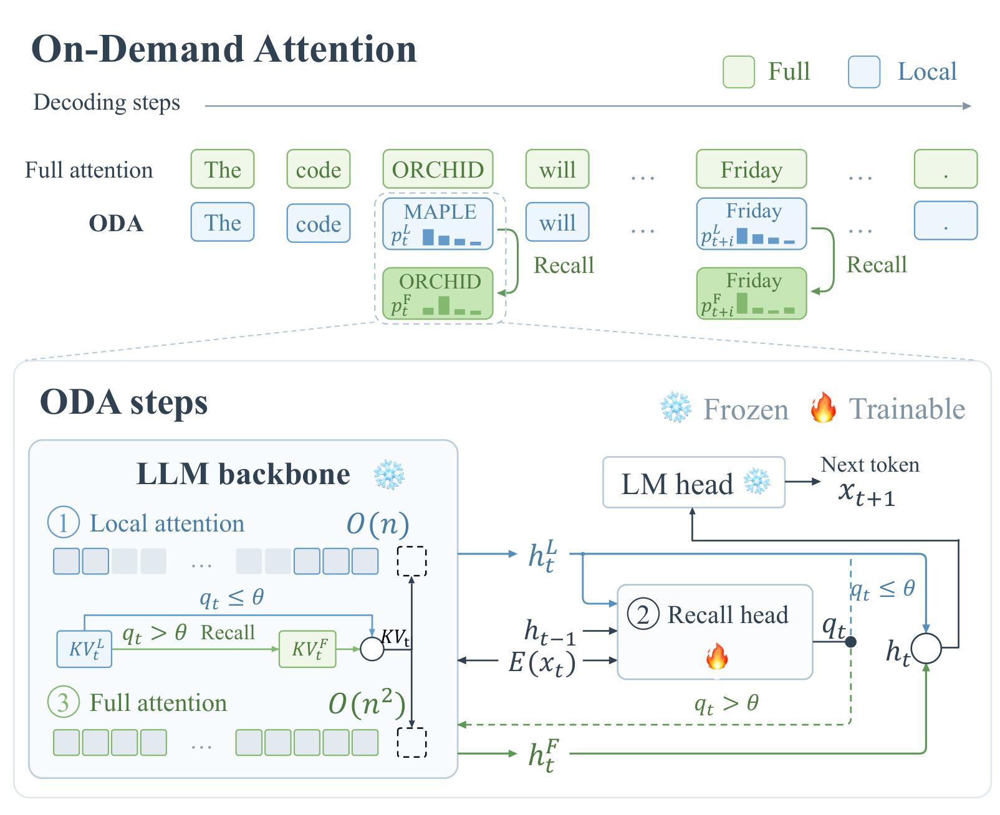
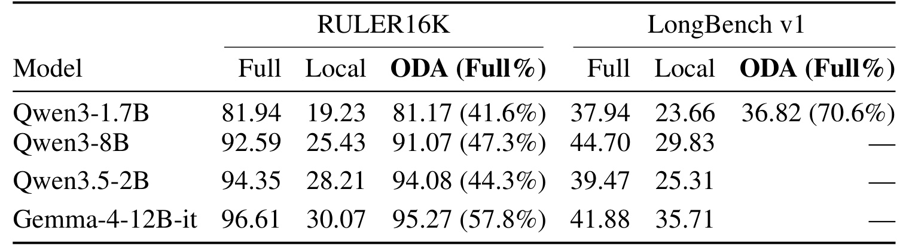
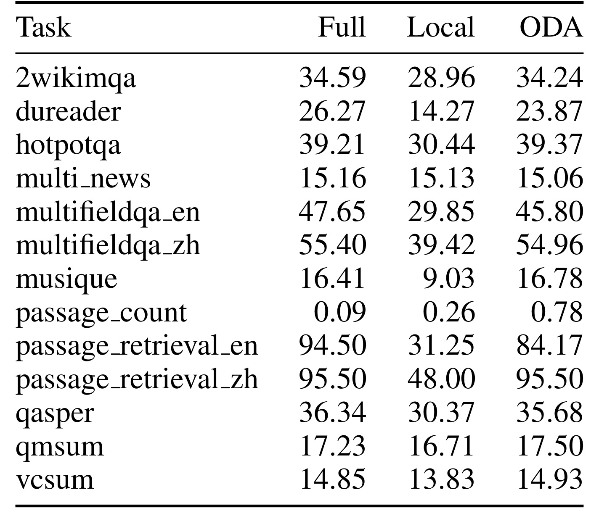
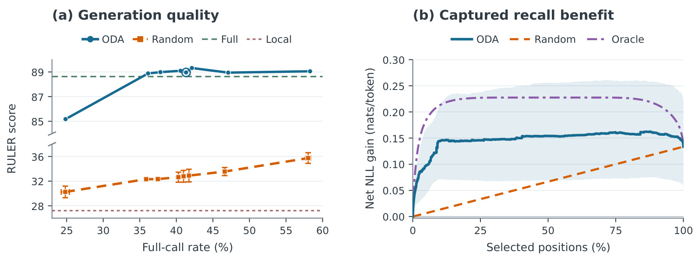
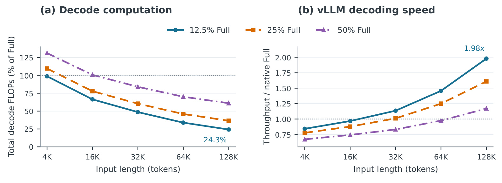
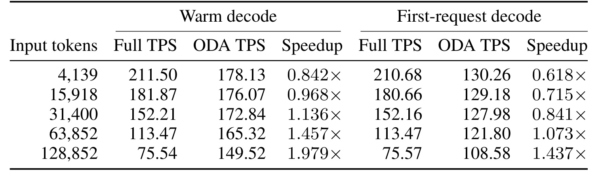
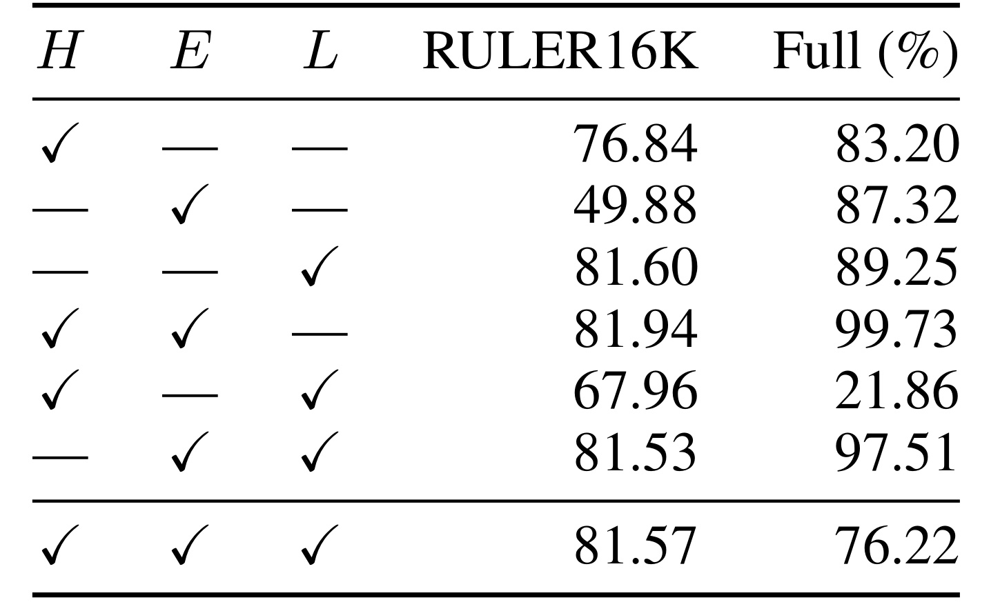
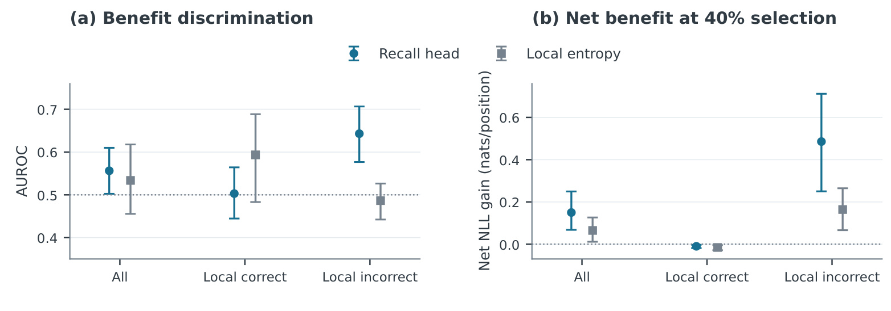

On-Demand Attention：让语言模型按需读取完整历史
On-Demand Attention: Language Models Know When to Recall，中文译为“按需注意力：语言模型知道何时回忆”，由 Haibo Feng、Ruiqi Liang、Hanyang Peng、Shiqi Yu 提出。一作主机构为南方科技大学，合作机构包括北京大学与鹏城实验室。论文于 2026 年 9 月 17 日公开，本笔记于 2026 年 9 月 21 日依据完整 28 页原文核验。论文入口。本轮未核验到独立代码入口；原文第十一页明确说明完整匿名实现仍待发布。它把全局注意力看成一种需要付费的额外计算，用冻结模型已经产生的状态预测当前步骤是否值得支付这笔成本。
长上下文解码每一步都读取不断增长的完整历史，但远处信息对下一次预测的帮助随生成步骤变化。要按预测需求分配全局注意力，模型必须在执行这次昂贵读取之前，判断它相对局部注意力能带来多少收益。
1. 背景和问题
长上下文推理的成本不能只用“模型可以接收多少 token”衡量。对一段已经预填充的历史，模型每次生成新 token，仍要让当前查询访问缓存中的键和值。缓存避免了把旧 token 的投影全部重算，却没有消除新查询对旧位置的读取。历史越长，这部分访存和注意力运算越重；输出又可能很长，成本便在大量连续步骤上累积。推理任务和 Agent 任务尤其容易出现这种情形：前面已经存放了材料、工具返回和指令，后面还要持续生成解释、计划或代码。每个词都付相同的完整历史读取代价，未必符合其实际信息需求。
论文首先区分了两个经常被混在一起的问题：信息是否被保留，以及当前步骤是否访问它。删掉缓存是一种存储决策，被删除的旧位置在以后需要时可能无法恢复；限制本次注意力范围是一种访问决策，只要完整缓存仍在，下一步可以重新读取。ODA 选择后者。因此它不能被直接归为缓存压缩，也不声称把历史内存需求降为常数。它要减少的是许多生成位置上的全局访问，而不是取消历史存储。这种区分对于长任务尤其有意义：最近几步暂时不需要某条远处事实，并不能推出后面的步骤也不会再用它。
固定滑动窗口提供了一个成本低而容易实现的起点。本文采用最初四个位置加最近两千零四十八个位置的访问方式，其中最近窗口包含当前 token。开头位置可以维持模型对初始上下文的访问，近期窗口则覆盖连续语言生成所需的大量局部关系。但被窗口排除的旧事实也可能恰好是当前问答所需的答案。实验中固定局部策略在合成检索任务上明显退化，说明单纯缩小访问范围会损害模型已经具备的长历史利用能力。问题因而变为：能否以较低的决策代价，在真正受益的时刻重新扩大范围，同时在其他时刻接受局部结果？
已有动态注意力路线可以在训练过程中联合学习语言表示与局部、全局计算的分配，也可以让不同层或不同头承担不同访问模式。这些路线改变模型训练或内部结构，部署时往往需要相应适配。ODA 提出更受限的问题：保持预训练模型参数不动，在一次完整的局部前向之后，读出已有状态中关于全局收益的信号。它的召回头不是外部检索器，没有去搜索新的文档，也没有新增一个语言模型负责生成答案。它只是判断，同一个模型在同一个历史上再做一次全局计算，是否可能比刚才的局部计算更有利。
这里的“更有利”也不能简单等同于“局部答案错了”。如果两条分支都把正确 token 排在第一位，但全局分支赋予它更高概率，负对数似然仍然改善。反过来，两条分支都错，也可能有一条分支更接近参考答案；全局读取改变预测，更不保证这种改变一定正确。本文用参考下一 token 的概率变化定义监督目标，因而能够描述收益方向和大小。训练阶段可以同时执行两条分支并查看参考答案，在线阶段却既不知道下一 token 的参考值，也不能先执行昂贵分支再决定是否执行它。召回头必须完成的正是这项信息不对称下的预测。
这使论文具有两层研究价值。第一层是表征诊断：冻结模型的已有解码状态，是否包含下一次全局访问的潜在价值？如果只能从已经执行的全局注意力或两分布之间的精确差异得到结论，就不能用于节省当前计算。第二层是系统验证：即使可以减少全局调用次数，局部试算、召回头、条件控制、状态回滚和重复前向是否会吃掉收益？本文把生成质量、固定参考位置的收益排序、受控调用安排下的硬件吞吐分开测试，恰好对应这两个层面，而这几组结果必须保持各自口径。
对推荐、搜索和个性化场景，最直接的联系是长期用户信息的选择性读取。服务可能保留完整行为历史，但当前生成的推荐解释、对话答案或候选描述只在部分位置需要访问很远的行为。ODA 提供的可迁移概念是“估计额外计算的条件收益”，而不是给长期行为做固定删除。不过本文没有推荐点击率、转化率或在线推荐结果，不能把语言任务改善直接解释为推荐收益。对于精排系统中一次性输出分数的场景，它的逐 token 控制也未必适用；更接近本文假设的是会连续生成、历史不断增长的推荐助手和用户记忆问答。
还有一个必须提前明确的区别：保持旧缓存不被删除，并不意味着旧状态和始终使用全局注意力的模型完全相同。某些旧 token 是在局部分支下形成的，它们的高层表示已经体现了受限访问。后来的全局重算会读取这些实际保存下来的状态，不会回头把全部旧 token 的深层表示重建一遍。因此完整保留带来的是未来可访问性，不能带来与始终全局解码轨迹严格等价的保证。这个区别决定了本文只能通过真实策略轨迹检验质量，不能只用离线的单步标签证明长期无损。
从这个角度读，论文真正有分量的贡献并非一个新的注意力公式，而是把访问收益的可预测性、可训练决策头以及可提交的执行状态串起来。判断它是否有效，应同时问清楚参考目标是什么、路由输入何时可用、训练缓存来自哪里、部署缓存如何演化，以及速度测量是否对应同一条质量曲线。只比较一个最好的吞吐倍数，或者只看平均分接近原模型，都会漏掉决定工程可行性的条件。
原文还把“何时读”与“读哪些信息”区分开：目前局部工作集仍是固定初始位置与滑动窗口，召回时仍读取完整历史。它尚未学习一个专门保存远处有用片段的紧凑工作集，也没有选择部分远处块。因此它的贡献集中在时间维度的访问分配，空间维度的内容选择仍是后续可以组合但尚未验证的方向。
2. 方法
2.1 访问范围与收益目标
论文第二节先定义共享缓存上的两种访问视图。为避免与召回分数重名，下式把注意力查询写成带上标的查询向量；原文省略层和头索引。注意力操作保持不变，改变的是索引集合。
符号解释：$o_t$ 是当前位置的注意力输出，$q_t^{\mathrm{attn}}$ 是查询向量，$\widetilde K_t,\widetilde V_t$ 是历史缓存接上当前键和值后的集合，$S_t$ 指定参与计算的位置，$d_k$ 是键维度。这个写法强调，缓存中存在某个位置不等于它必须参加每一次注意力运算。两条分支使用相同的模型参数，区别来自访问集合及由此产生的当前层内状态。
符号解释：$F,L$ 分别代表全局和局部分支，$s=4$ 是初始位置数量，$w=2048$ 是包含当前位置的近期窗口宽度，$t$ 是当前位置。集合重合时没有真实访问差异，训练可用位置从第二千零五十三个位置开始。固定窗口对局部计算提供上界，但这个上界不约束完整缓存容量。
符号解释：$x_{t+1}$ 为参考下一 token，$p_t^F,p_t^L$ 是从同一个已提交历史出发计算的概率分布，$g_t$ 是全局读取的即时收益，以自然对数单位计。正值支持全局，负值支持局部；零附近说明两者差异很小。固定历史下选错分支增加的损失等于收益绝对值，因此只计路由错误率会把无关紧要的小错与严重错误等量处理。另一方面，这仍是当前参考 token 的局部评价，不能直接等同于整段自由生成的任务分数。
2.2 召回头和配对监督
输入设计沿用原文第二点二节。召回头看到前一步最终选择的隐状态、当前已知输入 token 的嵌入，以及当前局部前向得到的末层归一化隐状态。三者均在执行本次全局前向之前可用。
符号解释：$q_t$ 现在表示标量召回分数，$R_\psi$ 是唯一训练的召回头，$h_{t-1}$ 是前一步已选择状态，$E_\phi(x_t)$ 为冻结模型的输入嵌入，$h_t^L$ 是本步局部输出，$\phi$ 为冻结主干参数。分数不是预测 token 的置信概率，也不是经过校准的实际硬件收益。它通过监督学习，把不同状态与后续全局计算的相对价值关联起来。
Qwen3-1.7B 的三个输入各为两千零四十八维，分别经过独立归一化、投影和激活，变成一千零二十四维。融合时保留三路原向量，以及每对向量的逐元素乘积和绝对差，得到九千二百一十六维交互向量；随后投影、残差融合，再过两个残差门控前馈块，最终输出标量。头使用单精度，共有二千八百三十二万五千八百八十九个参数。它相对主干较小，但并非一个没有运行成本的线性探针。独立塔和两两交互让模型既能看到各路内容，也能利用前后状态是否相似、局部结果如何偏离输入等关系。
符号解释：$d_t$ 为扣除调用惩罚的收益，$\lambda\geq0$ 是在预测损失尺度上定义的超参数。它表达“改善要足够大才值得重算”的偏好，但不是从实际显卡延迟测得的成本函数。主 Qwen3 配置取零，主混合模型和输入消融取零点零零一，因此不能把不同训练配置理解成仅更换了同一个阈值。
符号解释：$y_t$ 是监督标签，$\operatorname{sign}$ 保留方向，绝对值和对数把较大的收益压缩。该变换保持单调性，缓和极端位置主导回归的问题；但是经过变换再回归的条件预测值，即使能做逆变换，也不自动成为原始收益的条件均值。论文因此只把它当路由分数。
符号解释：$\mathcal E$ 为参考标签有效且两种访问集合不同的位置，$|\mathcal E|$ 为其数量，$\ell_{\mathrm{Huber},1}$ 为阈值一的 Huber 损失，误差小时是二次项，大时转成线性项。训练保留近零收益，不额外按收益大小加权。只有召回头接收梯度；主干、嵌入和词表投影只负责产生监督与特征。主配置按微批有效 token 均值再平均，后续配置按整个优化更新的有效 token 总数归一化，样本长度变化时两者并不等价。
配对标签来自完整注意力主干先产生的历史，两条当前候选都读取这份历史，却独立传播当前激活。它们不把各自当前状态写回供后续训练位置使用。前一隐状态输入则依据前一位置参考收益，在局部候选与完整主干状态之间选取后移一位，序列开头置零。这个选择不使用当前参考下一 token，因此不构成当前标签直接泄漏；但它依赖训练时已经算出的前一步两分支收益，部署只能使用真实头选择的分支。训练的完整历史和部署的选择历史存在分布差异，前一状态的选择规则也存在差异。这是本文必须用自回归生成验证的原因。
2.3 条件重算与状态提交
每一步先运行局部前向，再计算召回分数；默认分数超过零才重算全局，非有限分数则回退全局。全局重算从同一个步前状态开始，不接着局部计算产生的暂存状态继续执行。整个选择过程与需要提交的内容如下图所示。

Figure 1 上半部分通过两种示意说明“读取有用”的含义：全局分支可以把最可能的 token 从错误实体改成目标实体，也可以保持最可能 token 不变而提高其参考概率。这些词和调用安排都是机制示意，不是论文新增的真实案例测量。下半部分更关键：蓝色路线先产生局部隐状态，与上一选择状态、当前嵌入一起送入召回头；绿色虚线表示只有触发时才执行全局分支。最终隐状态一方面送进冻结词表头，另一方面传到下一个步骤，当前键值也必须来自同一被选择分支。如果输出选择全局、缓存却提交局部，就会破坏后续状态的一致性。
图中两条访问路线共享完整历史，而不是各自维护一段互不相干的生成。即使连续若干步没有进行全局读取，之前的每个已提交位置仍然保留，可以被后续触发访问。这里保留的是策略实际走出的历史：全局召回不会把以前在局部条件下生成的缓存改成始终全局的缓存。图里局部与全局的复杂度标签描述固定模型、固定窗口下累计跨因果位置的分支注意力成本，不能被理解为完整 ODA 总体始终线性，因为只要全局调用比例固定为正，长序列仍包含随长度增长的全局成本。
系统实现因而需要把候选生成和正式提交分开。在普通注意力模型中，当前各层键值先暂存，只把选中的更新写入完整缓存和局部视图。在混合模型中，还必须保存卷积与递归状态，全局重试前恢复步前状态；否则局部试算相当于把状态推进一次，全局重算又推进一次，两条分支就不再对应同一个条件。GPU 内条件执行减少了每步把路由结果传回 CPU 的同步开销，但没有消除局部试算和重复主干计算。模型级逻辑与底层状态事务必须一起正确，单独实现一个判断分数不足以复现这套算法。
符号解释：$b_t$ 为最终选择的局部或全局分支，$h_t$ 为提交隐状态，$W_{\mathrm{LM}}$ 为冻结词表投影，$C_t$ 为提交后历史，$\Delta C_t^{b_t}$ 是选择分支的当前状态增量，$\Vert$ 表示追加键值并应用递归更新。词表投影只运行一次。完整预填充产生第一个输出，之后才开始路由，所以生成一千零二十四个 token 对应一千零二十三次路由，而不是一千零二十四次。
符号解释：$\Delta F$ 是相对始终全局的每步平均计算节省，$\rho$ 为全局调用比例，$F_F,F_L,F_R$ 分别为全局主干、局部主干与召回头计算量。共同的最终词表投影抵消。只有避免的全局计算大于每步局部尝试与决策成本，节省才为正；全局调用多时，甚至会比始终全局更贵。该式解释了为什么减少一半调用不能直接推导出一半延迟，以及为什么长历史比短历史更容易获得收益。
3. 实验结果
3.1 长上下文质量与逐任务损失
主实验采用 RULER16K 十三任务、每任务一百样本，以及 LongBench v1 的十三任务、两千五百五十样本子集。后者采用归档的四万零九百六十 token 预算协议，并不是完整 LongBench 所有任务。所有质量测试先完整预填充，再沿各策略自己的生成与缓存轨迹继续；主要配置使用贪心解码、关闭 thinking、最多输出五百一十二 token。全局调用率按路由 token 汇总，任务分数按官方指标做任务宏平均，二者的加权方式不同。

Table 1 的主结论是恢复局部策略丢失的大部分能力。Qwen3-1.7B 在 RULER 上从局部的 19.23 回到 81.17，接近完整注意力的 81.94，实际调用率为 41.6%。按照完整与局部的差距计算，约恢复 98.8%，这不是绝对准确率提升百分比。在 LongBench 上，局部为 23.66，完整为 37.94，ODA 为 36.82，恢复约 92.2%，但需要 70.6% 的全局调用。相同头在不同任务中表现出的访问强度不同，说明调用比例应被看成任务与策略共同决定的结果，而不是可以直接移植到任意业务的固定常数。
跨模型结果需要单独解读。Qwen3-8B 得到 91.07，对照完整的 92.59，调用率 47.3%；混合 Qwen3.5-2B 得到 94.08，对照 94.35，调用率 44.3%；Gemma-4-12B-it 得到 95.27，对照 96.61，调用率 57.8%。每个模型都有单独训练的召回头，所以这支持方法在不同主干上可重新适配，不证明头可以直接跨模型迁移。混合模型只限制六层普通全局注意力，其余十八层门控递归计算保持原状。Gemma 的原生局部层也维持原有计算，所谓完整基线始终指各主干的原生配置，而非把所有层强制改成全局层。
表中的破折号是真正缺测：较大 Qwen、混合 Qwen 和 Gemma 都还没有 LongBench 的 ODA 结果。不能用它们已有的完整、局部分数补出 ODA 值，也不能据 RULER 推断复杂自然任务同样恢复。原文没有提供主质量结果的样本级置信区间；主检查点也没有声明由独立验证选择规则选出。因此零点几分的差距只能当已报告点估计，不能表述成统计无损。跨模型的后端细节和个别训练配置公开程度也不完全一致，这为复现留下了实质性缺口。主表还不能说明相同调用率能减少等比例累计读取，因为各策略生成长度不同，触发发生时的历史长度也不同；流量需要逐步累加访问位置才能比较。

Table 5 揭示平均分掩盖的差异。英文段落检索从完整的 94.50 降到 ODA 的 84.17，差十点三三分，远大于总平均的一点一二分损失；中文段落检索则都为 95.50。中文阅读理解从 26.27 降到 23.87，英文多字段问答从 47.65 降到 45.80，Qasper 也略有下降。与此同时，HotpotQA、Musique、会议摘要等个别任务略高于完整基线，这些方向不同的变化一起形成总平均，不能把平均接近解释为每个任务都可靠。表里计数任务三种策略的绝对分数都很低，即使 ODA 数值更大，也不代表获得了可用的计数能力。
英文检索的负向结果对长记忆助手尤其有约束力。一个系统可能在多数生成 token 上只依赖近处内容，但答案所依赖的远处实体若恰好在少数关键步骤被漏读，就会造成整条回答失误。召回头的训练目标是平均即时参考概率收益，未必充分重视低频而业务代价很高的实体。正文不能据此推断确切错误机制，因为作者没有给出该任务的逐错误归因；但复现时应该把它作为定向评估集，而不是让其被跨任务宏平均稀释。
附录 RULER 分解还显示 Qwen3-1.7B 的第三类多键检索由 90 降至 82，较大 Qwen3-8B 同项由 98 降至 84，说明扩大主干不能自动消除选择性访问损失。另一方面，常见词提取任务中小模型完整为 12、局部为 25.8、ODA 为 14.9，表明“全局越多越好”不是每个任务上的规律。应该把这种局部有利的情况与主方法的收益定义联系起来：目标允许负收益，全局分支并不被预设为处处正确。但没有误差条的任务点估计不足以证明某一种策略稳定胜出，仍需多样本与多随机种子重复。
3.2 学会何时调用比同频随机调用更重要
只报告平均调用率下降，尚不能证明决策头有价值。作者为五个 RULER 任务设置八个阈值，并用每个任务观测到的 ODA 调用率作为随机策略的伯努利概率。随机策略使用三个路由种子，并沿自己的生成轨迹前进。这让两类策略拥有接近的调用预算，而不会替随机策略挑选有利位置。

Figure 2 左侧的零阈值点，ODA 得分 88.96、任务等权调用率 41.33%；随机得分 32.79，跨三个路由种子的样本标准差 0.95，实际调用率 40.99%。这个巨大差距支持“何时调用”有实际作用，而不只是调用次数变少。完整基线在这组独立五任务设置中为 88.63，不能拿它与十三任务表中的 81.94 直接比较。图中纵轴断开，低分随机曲线与高分学习曲线分处两个线性区间，阅读视觉距离时应留意这一设计。误差条只描述路由随机种子差异，不包含训练种子或样本抽样不确定性。
同一组实验还有调用率分母的细节。图上两轴都按任务等权平均；如果把全部生成 token 汇总，零阈值 ODA 调用率是 36.86%，随机是 36.06%，与图中的四成左右不同。生成长度和终止行为也受到路由影响，一百七十个运行中随机策略触及输出上限的比例高于 ODA。因此这不是在一条完全相同的 token 轨迹上更换动作，而是相近目标频率下的自由生成策略比较。它证明整体策略的价值，但不能独立隔离每次动作的单步因果效应。
右侧切换为离线诊断：十六篇文档贡献两千零四十八个固定参考位置，冻结各位置记录的历史，然后按召回头分数、均匀随机或事后真实收益选择位置。百分之四十预算下，ODA 捕获每位置约 0.150 nat 的净收益，随机期望约 0.053，事后最优约 0.227。净收益把选中的负收益也计算在内，分母是整个评价集合。事后最优知道当前真实收益，在线不可用；随机曲线也是固定历史上的期望，不是左侧随机生成轨迹。两幅图从不同角度支持控制器，但不能把右侧最优收益当成真实部署可达到的性能上界证明。
3.3 解码收益受长度、调用率和冷启动影响
效率评估使用单张 A100-SXM4-80GB、批量一、vLLM 0.18，主干与缓存为 BF16，召回头为 FP32。每种输入长度使用一条完整基准提示及固定的一千零二十四 token 续写，人工安排不同次数的全局调用，同时仍实际运行召回头。这样控制工作量以测执行代价，代价是它与前面的学习策略质量实验不构成同一工作点。

Figure 3 左图给出主要解码运算量相对完整基线的比例，右图给出真实暖启动吞吐。输入约十二万八千 token、调用约八分之一时，ODA 使用完整方案 24.26% 的主要 FLOPs，即节省 75.74%；吞吐从每秒 75.54 token 升到 149.52，约 1.98 倍。计算量比约四点一二，却没有对应四倍吞吐，说明运算量和实际系统时间之间还有访存、控制和执行开销。横轴是几种输入长度的等距类别，不是连续线性尺度，曲线只连接这些具体测试点。
短序列的结论反向。在约四千 token 下，同样约八分之一调用率，ODA 暖吞吐只有完整基线的 0.842 倍，约慢 15.8%；约一万六千 token 仍略慢，约三万二千才开始明显超过完整方案。调用率提高到约一半时，即便六万多输入也接近没有收益；附录完整三十格矩阵保留了这些慢点。即使完全不执行全局，ODA 也要执行局部与头，因此零调用率不是零成本；反过来全部调用时先局部后全局，会产生明确重复工作。图证明的是长上下文里具备节省空间，而不是一种对任意长度与预算都加速的通用替换。
作者通过 GPU 内条件执行与 CUDA Graphs 把控制留在设备，避免每一步等待 CPU 决策。计时包含全层前向、头、条件全局、状态提交、词表投影、采样和引擎循环，排除加载、分词、完整预填充、第一个输出、反分词和 HTTP 传输。扩展计时长度使用 YaRN，但这并不证明相应长度的任务质量。尤其不能把表一在十六千上下文、四成以上调用率的质量点，与图三在十二万八千上下文、八分之一人为调用率的速度点拼成“质量几乎无损且快两倍”的单一宣称。质量实验与性能实验的后端也不同，前者主要采用 Transformers，后者使用专门优化的 vLLM 执行路径。

Table 18 进一步把暖吞吐与首请求吞吐分开。暖值是预热和图捕获之后三次请求的中位数，首请求则在新进程里单次测量，包含解码过程中遇到的图捕获。约十二万八千输入下，暖加速为 1.979 倍，首请求只有 1.437 倍；约三万一千输入下暖加速为 1.136 倍，首请求却降到 0.841 倍。短输入首请求的下降更明显：四千输入仅为基线 0.618 倍，一万六千为 0.715 倍。说明上线前如果只测预热后的连续请求，很容易忽略首次用户体验或频繁进程重启的代价。
表内两种口径都排除预填充。对于输入很长、输出很短的请求，预填充可能占总延迟重要部分，即使输出阶段加速，也不能按相同比例推断端到端收益。对于常驻服务，首请求开销可能能够摊薄，但这取决于请求分布、图缓存复用和模型驻留策略，本文没有测这些业务条件。吞吐是单请求串行 token 速率，也不是多请求系统的总体吞吐；不同请求路由分支不一致时如何形成批次、保持 GPU 利用率，尚未被这些实验回答。
原文还明确没有测峰值内存、含预填充延迟，以及同一学习策略联合质量与速度。其实现一致性测试对比的是相同路由策略的参考执行，包括 logits、动作和状态提交，不能理解成与始终全局输出分布相同。训练成本同样没有完整 GPU 小时与峰值显存账本。头只有主干约百分之一点七的参数，并不能推出总训练便宜，因为监督仍需完整主干与两种候选计算。使用本文作系统设计依据时，这些未测量项应保留为空白，而不应由理论 FLOPs 推算填充。
3.4 输入消融与检查点稳定性
召回头的三路输入是否都重要，通过七个同容量头比较。缺少的输入流用某个已有输入填充，所以参数数量不变；每组独立训练一千零二十四次更新、使用同一初始化种子。所有组依然先运行局部，单独使用局部隐状态的头并不等于始终局部基线。

Table 2 中仅当前嵌入一项，调用率已达 87.32%，得分却只有 49.88；仅局部隐状态能达到 81.60，但调用率为 89.25%。前一状态加嵌入几乎总是调用全局，达到 99.73%，得分 81.94；加入局部隐状态后，三路输入得分 81.57，调用率下降到 76.22%。这组结果支持输入组合会显著改变学出的访问策略，也提示当前局部计算结果能够帮助减少不必要调用。但其调用预算不同，不能据分数或调用率直接计算某一输入的独立边际价值，更不能说三路输入在所有同预算点严格最优。
值得注意的是，前一状态加局部隐状态的调用率仅 21.86%，分数却掉到 67.96。低调用不是越低越好，需要连同质量一起解释。三路头在这一消融配置中的调用率也明显高于主结果的 41.6%，因为训练目标、归一化、微批和种子配置不同，不能把两个表当成同一训练的不同截面。七条轨迹来自一个初始化种子，不是独立训练重复；自然零阈值只给出各自运行点，没有建立完整且公平的预算匹配比较。
附录训练轨迹进一步削弱“训练越久越好”的假设。同一三路消融头在更新一千零二十四、两千零四十八、三千零七十二时，调用率依次为 76.22%、50.11%、71.43%，分数维持在 81.33 至 81.57。主 Qwen3 运行后期的调用率也大幅波动，第三个检查点达到 91.23%，却没有带来稳定质量改善。不同监督损失控制还发现加权二分类调用更多，类别平衡虽减少调用却损害质量，但这些目标分数语义不同、自然阈值不对应相同预算。因此更稳妥的下一步是固定质量底线后比较完整曲线，并在独立验证集选点，而不是从各配置挑一个漂亮数字。
3.5 收益预测与置信度并不相同
最后一组诊断使用固定参考 token，让两分支从相同保存状态出发，以避免参考答案被策略自己生成的 token 替代。按照局部分支事后是否预测正确，可以观察召回头在不同位置上的行为；这个正确与否标签只用于离线分组，不会泄漏给在线策略。

Figure 4 左图中，全部两千零四十八位置的收益正负 AUROC，召回头为 0.556，局部熵为 0.534，二者差异尚未被区间统计明确支持。在六百七十五个局部预测错误位置，召回头为 0.643，熵为 0.486，配对差值的置信区间为 0.069 至 0.230，支持该子集里头对有益访问的区分更强。这个结果不意味着头知道每个错误，也不意味着整个样本上的分类显著优于置信度。它检验的是完整头，不能把增益全归因于局部隐状态这一路。
右图用百分之四十选择预算比较净收益，分组后在各组内部重新排序，不是把全体选择结果直接拆开。局部错误组中，召回头净收益约 0.486 nat，每位置明显高于熵的约 0.164；局部正确组的两种排序都得到负净收益。后者非常重要：提高调用预算可能让模型访问一些实际有害的位置。全体选择中召回头高于熵的净收益差值区间为正，即便收益符号 AUROC 差异尚未确定，这也并不矛盾，因为排序中抓住少数大收益位置和均匀判别正负是不同目标。
原文的计数也说明正确性与收益不能互换：两条分支都预测对的一个子集中，完整分支仍既有提高参考概率也有降低参考概率的位置；局部预测错误的六百七十五位置中，三百四十五个具有正收益，但只有六十个被全局纠正为第一名。另一个更大规模离线分析中，两分布 KL 与收益绝对值相关较高，与有符号收益相关较弱；精确当前 KL 又需要先执行完整分支，所以它不是免费的路由输入。混合模型的八序列独立参考 pilot 没有确立同样的错误子集区分优势，只能作为初步证据。这些诊断为收益目标提供支持，也同时限定了标题中“知道何时回忆”应被理解为经验上的可预测性，而非稳定校准的自我认知能力。
4. 总结
ODA 的研究价值在于把完整历史保留与逐步访问拆开，并用冻结主干的已有状态预测额外全局计算的收益。局部试算先产生候选，再由小型头决定是否从同一历史重算，最后把所选分支的输出和状态一起提交。它给已有模型加了一种可训练的访问控制，主质量实验显示，这种控制能够在减少调用的同时恢复局部注意力损失的大部分能力。随机同频对照说明调用时机有价值；固定参考诊断则解释这种价值与简单不确定性并不相同。
对大模型工程，最值得保留的是三项区分：训练信号与运行代价的区分，保留容量与访问流量的区分，受控性能测试与真实策略质量的区分。调用惩罚还不是硬件成本，完整缓存还需要线性存储，固定调度的吞吐曲线还不是质量约束下的服务曲线。若把这些条件保留，本文提供的是一个可研究的控制器设计与系统实现，而不会被误读成不损质量、无条件提速的现成替换。
局限首先来自即时监督：参考下一 token 的收益没有直接包含动作对未来缓存和整段任务成功的影响。其次，完整主干历史训练与选择历史部署不同，错误可以跨步积累，保留全部缓存也不能恢复始终全局轨迹。第三，收益依赖历史长度和调用预算，短输入以及冷启动存在实测减速，批处理和端到端延迟尚未验证。第四，质量汇总掩盖英文检索等明显负向项目，多模型 LongBench 缺测，部分结果缺少样本区间与独立检查点选择规则。第五，每个主干需要独立头，头的参数比例小并不等于总训练成本小，完整训练资源账本和独立代码入口仍待补齐。
对推荐系统，合理迁移对象是使用长期用户历史的生成助手、个性化问答和推荐解释，而非直接假设它能改善现有 CTR 精排。可先在长期偏好事实检索任务中测量漏读远处信息造成的错误，并把近期行为和较早重要行为分别分桶。特别重要的用户约束可能值得更保守的访问策略，不能只优化平均参考概率。这样的实验若要接近业务，还需检查延迟尾部、不同会话长度、缓存资源占用和错误推荐解释，本文没有提供这些业务结论。
还有一个实用的验收标准是同时保存选择动作和提交状态的轨迹。若只比较最终分数，数值实现引起的小收益符号变化、局部视图和完整视图不一致、或递归状态多推进一次，都可能被误以为是学习能力差异。论文在参考回放中比较动作、输出和状态摘要，这类一致性检查应先于调阈值，避免用策略参数掩盖执行错误。
后续复现应优先做三件事。第一，在同一真实生成策略、同一批提示上同时测任务质量和含预填充延迟，避免拼接不同预算的最好结果；同时保留冷启动和暖运行。第二，在独立验证集上扫阈值、选择检查点，并按英文检索、多键检索、摘要等任务分别报告质量与调用率，检查头的失误是否集中在关键事实。第三，复核混合模型的状态回滚与提交，记录局部连续运行后的历史漂移，再评估更贴近实际轨迹的训练是否必要。若这些条件成立，才进一步尝试与缓存量化、分层存储或更强局部工作集组合，并把数据搬运和维护成本计入账本。